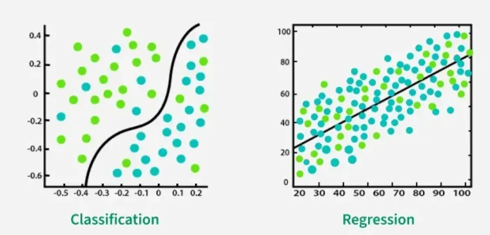
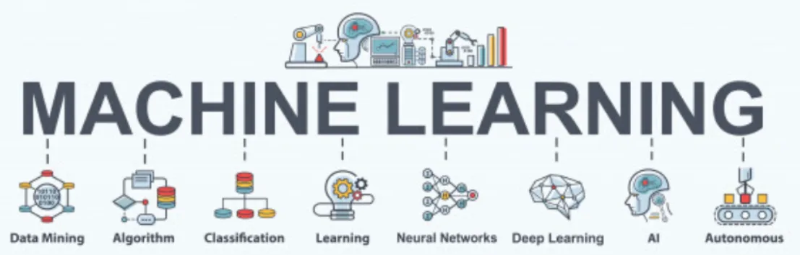
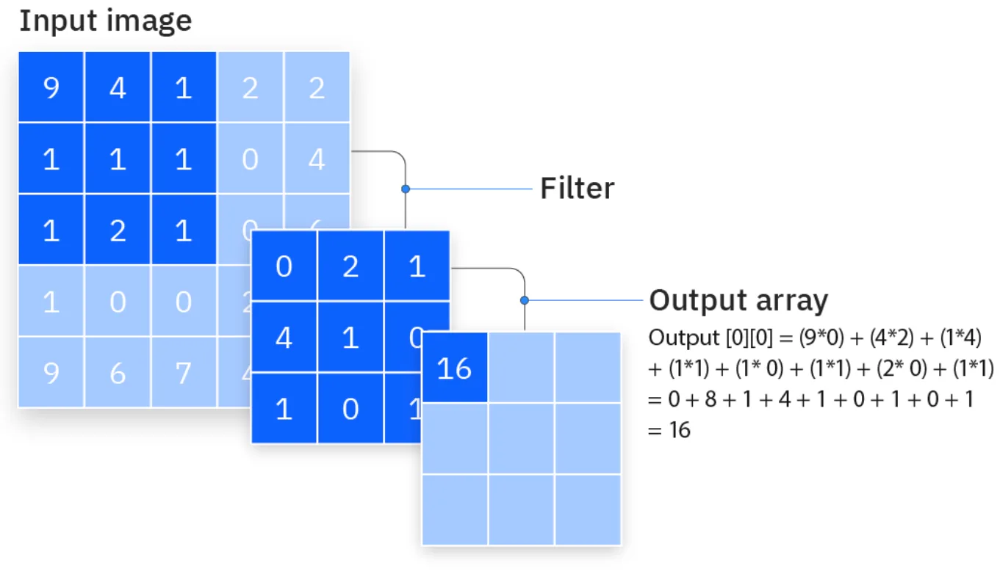

Comprehensive Notes on Andrew Ng’s Machine Learning Course
Contents
- C1-Supervised Machine Learning - Regression and Classification
- P25 Feature scaling
- P29 Feature Engineering, P30 Multiple linear regression
- P31 Motivation
- P32 Logistic regression
- P33 Decision Boundary
- P34 Cost Function for Logistic Regression
- P35 Simplified Loss function
- P37 Overfitting
- P38 Addressing Overfitting
- P39 Regularization
- P40 Regularization for Linear Regression
- C2-Advanced Learning Algorithms
- P45 Requirement prediction
- P51
- P61
- P62 Activation function
- P66 Multiclass, Softmax
- P69 Multi-label Classification
- P79 Advance Optimization Algorithm (Adam)
- P71 Convolutional Layer
- P75 Diagnostic
- P77 Model Selection
- P78 Bias/Variance
- P84 ML Development
- P89 Data Augmentation
- P90 Transfer learning
- P88 MLOps
- P90 Skewed Datasets
- P91 Decision Trees
- C3-Unsupervised Learning
Based on NG's Machine Learning course
C1-Supervised Machine Learning - Regression and Classification

- Regression: Fitting a function that predicts a continuous or probabilistic output from input variables. E.g. linear regression, polynomial regression.
P25 Feature scaling
Features may have different units and magnitudes, algorithms perform better when features are on a comparable scale.
- Prevent domination by large-scale features, algorithms like gradient descent, KNN, and clustering can be biased toward features with larger numerical values.
- Faster convergence in optimization.
Common methods of feature scaling:
- Min-max normalization, keep data in a range, it is sensitive to outliers.
- Standardization or Z-score normalization. Centers data at mean 0, standard deviation to 1. Works better when data has outliers.
- Robust scaling (using median and IQR), good for datasets with many outliers.
Mean normalization: x_i:=\dfrac{x_i - \mu_i}{max-min}
Z-score Normalization x_i:=\dfrac{x_i - \mu_i}{\sigma_i}
All features will have a mean of 0 and a standard deviation of 1. \sigma is the standard deviation$
The scaled features get very accurate results much, much faster.
P29 Feature Engineering, P30 Multiple linear regression
Feature Engineering: Using intuition to design new features, by transforming or combining original features. So the machine learning model can understand the data better and perform more accurately.
It turns raw sensory signals into meaningful information that makes patterns easier for a model to learn.
quadratic function: 二次方程, cubic function: 三次方程
When doing feature engineering, the feature scaling becomes increasingly important.
Gradient descent is picking the 'correct' features for us by emphasizing its associated parameter.
P31 Motivation
Binary classification, negative/positive class
P32 Logistic regression
Logistic regression is a supervised learning algorithm used for binary classification. Instead of predicting a continuous value like in linear regression, it predicts the probability that a sample belongs to a class.
- Logistic regression assumes that input features have a linear relationship with some underlying score.
- But probabilities must be between 0 and 1, so we pass that score through a sigmoid function.
tumor: 肿瘤 malignant 恶性的
Logistic function is sigmoid function
g(z)=\dfrac{1}{1+e^{(-z)}}
This maps any real number z into the range (0, 1). Maps values to probabilities. Logistic means logical reasoning or calculation.
- This S-shape curve is called the logistic curve, originally used in population growth modeling in the 19th century.
Logistic regression model:
f_{w,b}{x}=g(w\cdot x+b)=\dfrac{1}{1+e^{-(w\cdot x + b)}}
f_{w,b}(x)=P(y=1|x;w,b) , That means: Probability that y is 1, given input x, parameters w,b
Even though logistic regression deals with classification, not continuous values, it is still called regression because it models a continuous probability, then we threshold that probability. So logistic regression is regression in form, classification in purpose.
P33 Decision Boundary
A decision boundary is a line, plane, or hypersurface that separates different classes predicted by a classifier.
Decision boundary: z=w\cdot x + b=0
Non-linear decision boundaries,
P34 Cost Function for Logistic Regression
Loss function: L(f_{w,b}(x),y)
If y = 1 = -\log(f_{w,b}(x))
If y = 0 = -\log(1-f_{w,b}(x))
P35 Simplified Loss function
Loss function measures the error for a single training example:
L(f_{w,b}(x,y))=-y\log(f_{w,b}(x))-(1-y)\log(1-f_{w,b}(x))
Cost function measures the average error across the entire training set:
J(w,b)=\dfrac{1}{m}\sum[L(f_{w,b}(x),y)]=-\dfrac{1}{m}\sum[y\log(f_{w,b}(x))-(1-y)\log(1-f_{w,b}(x))]
Why choose this as the cost function, it derives from statistics using maximum likelihood estimation, which is an idea from statistics on how to efficiently find parameters from different models.
P37 Overfitting
Overfitting happens when a model learns the training data too well, including its noise, outliers, and random fluctuations, instead of just the underlying pattern.
Underfit, high bias; Overfit, high variance
Causes of overfitting:
- Too complex model
- Too few training samples
- Noisy data
- Too many training epochs without regularization
P38 Addressing Overfitting
- More training data, collect more data.
- REgularization (L1, L2 penalties)
- Dropout in neural networks
- Early stopping, stop training before overfitting.
- Cross validation to check generalization
- Simplify the model, reduce depth, features, parameters.
- Feature selection, drop redundant or irrelevant features, use domain knowledge or use statistical methods. All features + insufficient data = Overfitting, this is the curse of dimensionality.
P39 Regularization
Regularization discourages a model from becoming too complex.
- A model with very large weights w tends to fit the training data too perfectly, including noise.
- Regularization adds a penalty to the cost function, so the model prefers simpler weights (smaller values).
J(w,b)=\dfrac{1}{2m}\sum(f(x)-y)^2 + \dfrac{\lambda}{2m}\sum w^2, \lambda > 0
L2 regularization (Ridge):
- Adds the sum of squared weights to the cost function.
- Shrinks weights smoothly, keeps all features but reduces influence.
- Decision boundary becomes smoother.
J(w,b)=\dfrac{1}{2m}\sum(f(x)-y)^2 + \dfrac{\lambda}{m}\sum |w|, \lambda > 0
L1 regularization (Lasso)
- Adds the sum of absolute weights to the cost function.
- Some weights shrink to zero, automatic feature selection.
- Creates sparse models.
P40 Regularization for Linear Regression
In linear regression, if we have too many features or correlated features, weights can be come very large. Apply regularization prevents overfitting:
- L2: small weights smooth solution.
- L1: sparse weights, feature selection.
- Elastic Net: mix of both
C2-Advanced Learning Algorithms

P45 Requirement prediction
Inference (prediction); activation; activation values;
a = f(x) = \dfrac{1}{1+e^{wx+b}}
a^{[1]} denotes the output (activation value) of layer 1. input layer is layer 0.
a_j^{[l]}=g(w_j^{[l]}\cdot a^{[l-1]}+b_j^[l])
g is the activation function
P51
Matrix 2x3 in Numpy x = np.array([[1,2,3], [4,5,6]])
Matrix is 2D array.
Vector is 1D array. x = np.array([200, 17]), just a list.
P61
In binary classification problem, The logistic loss function, also known as binary cross entropy is used to measure the performance:
L(y, \hat{y}) = -\left[ y \log(\hat{y}) + (1 - y) \log(1 - \hat{y}) \right]
- Penalizes confident but wrong predictions heavily.
- Rewards predictions that are close to the true class.
- Ensures smooth and differentiable optimization for training neural networks or logistic regression models.
Compute derivatives for gradient descent using back propagation.
P62 Activation function
The purpose of activation function is to introduce nonlinearity, allowing the network to learn complex relationships between inputs and outputs. Without activation function, the entire neural network would just be a linear function, no matter how many layers it had.
Common activation functions:
| Function | Formula | Output Range | Key Characteristics |
|---|---|---|---|
| Sigmoid (Logistic) | \sigma(z) = \frac{1}{1 + e^{-z}} | (0, 1) | Smooth “S” curve, good for probabilities (used in logistic regression) |
| Tanh | \tanh(z) = \frac{e^z - e^{-z}}{e^z + e^{-z}} | (-1, 1) | Centered around 0, stronger gradients than sigmoid |
| ReLU (Rectified Linear Unit) | f(z) = \max(0, z) | [0, ∞) | Very popular — fast, sparse, reduces vanishing gradients |
| Leaky ReLU | f(z) = \max(0.01z, z) | (-∞, ∞) | Fixes ReLU’s “dead neuron” problem |
| Softmax | f_i(z) = \frac{e^{z_i}}{\sum_j e^{z_j}} | (0, 1), sum=1 | Converts vector to probability distribution for multi-class classification |
Commen used one is ReLU (rectified linear unit) g(z)=\max (0,z).
- In backbones, typical choice is ReLU or Leaky ReLU, they are simple and computationally cheap, important for real-time inference, leaky ReLU avoids dead neurons when inputs are negative.
- In necks, ReLU is used, smooth gradient flow is critical for training stability, especially during feature fusion.
- In detection head
- For multi-label classification, use Sigmoid. Each class is treated independently, can detect overlapping categories.
- For single label classification, use Softmax, ensures probabilities sum to 1, only one class per proposal.
P63
In classification problems, the sigmoid function (binary) or softmax (multi-class) is a natural choice for the output layer since they produce probabilities.
In regression, a linear activation is used for unrestricted outputs, or ReLU/Softplus if outputs must be non-negative.
For hidden layers, ReLU (or its variants) is most commonly used today because it’s fast, simple, and avoids vanishing gradients, while sigmoid is rarely used due to its two flat regions that slow down gradient descent.
P66 Multiclass, Softmax
Softmax is used for multiclass classification problem
Softmax regression, N possible outputs
z_j = w_j \cdot x + b_j, j=1,...,N
Activation function: a_j=\dfrac{e^{z_j}}{\sum_{k=1}^{N}e^{z_k}}=\mathbf{P}(y=j|x)
a_1 + ... + a_N=1
If use softmax for binary classification, it is same as sigmoid activation.
P67, P68
For digit recognition problem, use softmax as output layer, and use 10 neutron to form the output layer.
Loss function name in TF is SparseCategoricalCrossentropy.
TF, from_logits=True will make the round off more accurate when with softmax.
model.compile(loss=SparseCategoricalCrossEntropy(from_logits=True))
P69 Multi-label Classification
Can use sigmoid activations function for the output layer.
P79 Advance Optimization Algorithm (Adam)
Adam (Adaptive moment estimation) algorithm is one of the most popular optimization algorithm. It automatically adjusts the learning rate alpha. It not just one alpha, but each neutro has one learning rate.
It combines the advantages of two other methods:
- AdaGrad: adapts learning rates for each parameter individually
- RMSProp: smooths learning rate using a moving average of squared gradients So Adam is essentially adaptive learning rate + momentum. It keeps track of both average gradient and average squared gradient, making training efficient and robust.
In gradient descent, updates are simple: \theta_t = \theta_{t-1} - \alpha \nabla_{\theta} J(\theta), But this can be slow or unstable because:
- Some parameters may need smaller steps (steep gradients)
- Others need larger steps (flat regions)
- Gradients may oscillate in certain directions
Adam automatically adjusts the learning rate for each parameter based on gradient history, making training faster and more stable.
If w or b keeps moving in same direction, increase alpha. If keeps oscillating, reduce alpha.
In code, model compile select optimizer use Adam. It uses one default init learning rate.
It is better than gradient descent algorithm.
Algorithm Steps:
- For parameter \theta, compute gradient: g_t = \nabla_\theta J_t \theta
- Update moment estimates:
- Fist moment (mean of gradients): m_t = \beta_1 m_{t-1} + (1-\beta_1)g_t
- Second moment (uncentered variance): v_t = \beta_2 v_{t-1} + (1-\beta_2)g^2_t
- Bias correction (for initialization bias):
- \hat{m}_t = \frac{m_t}{1 - \beta_1^t}
- \hat{v}_t = \frac{v_t}{1 - \beta_2^t}
- Parameter update: \theta_t = \theta_{t-1} - \alpha \frac{\hat{m}_t}{\sqrt{\hat{v}_t} + \epsilon}
| Symbol | Meaning | Default |
|---|---|---|
| ( \alpha ) | Learning rate | 0.001 |
| ( \beta_1 ) | Decay for first moment | 0.9 |
| ( \beta_2 ) | Decay for second moment | 0.999 |
| ( \epsilon ) | Small constant for stability | 1e-8 |
Pros:
- Fast convergence
- Works well in practice
- Handles sparse gradients
- Combines benefits of Momentum and RMSProp
Cons:
- Can overfit if learning rate isn't tuned
- Sometimes converges to slightly worse minima than SGD with momentum
- Requires more memory
| Algorithm | Type | What it does |
|---|---|---|
| SGD (Stochastic Gradient Descent) | Optimization algorithm | Updates weights in the opposite direction of gradient using random mini-batches |
| Adam (Adaptive Moment Estimation) | Optimization algorithm | Uses momentum + adaptive learning rate for each parameter |
| RMSProp, AdaGrad, AdamW, AdamP, etc. | Optimization variants | Improve convergence speed, stability, or generalization |
P71 Convolutional Layer
A convolutional layer is a special type of neural network layer designed to automatically learn spatial patterns in data. Instead of connecting every neuron to every input pixel like a fully connected layer, a convolutional layer only looks at a small local region (receptive field) and slides that filter across the entire image.
- Faster computation
- Need less training data, less prone to overfitting.
- Learns local spatial features
- Weight sharing, same filter slides over the whole image, fewer parameters than fully connected layers.
- Translation invariance: detects the same pattern anywhere in the image.
Key Hyperparameters
| Parameter | Meaning | Example |
|---|---|---|
| Filter size (kernel) | size of sliding window | 3×3, 5×5 |
| Stride | how far the filter moves each step | 1, 2 |
| Padding | add zeros around input borders to preserve size | "same" or "valid" |
| Number of filters | number of output feature maps | 16, 32, 64, ... |
Structure of a Conv Layer: input layer -> Conv2D -> activation -> Pooling -> Next layer

- Conv2D: performs convolution (learns filters)
- Activation (e.g., ReLU): introduces non-linearity
- Pooling: reduces spatial size (downsampling)
P75 Diagnostic
Diagnostic: A test that you run to gain insight into what is/isn't working with a learning algorithm, to gain guidance into improving its performance.
Common Diagnostics Examples:
| Diagnostic | What It Tells You | How It Helps |
|---|---|---|
| Training vs. validation error | Whether your model has high bias or high variance | Guides whether to add data, regularization, or model capacity |
| Learning curve | How error changes with more training data | Shows if adding data would help |
| Error analysis (confusion matrix, misclassified samples) | Which classes or examples cause mistakes | Helps in data cleaning or model fine-tuning |
| Gradient checking | Whether your implementation of backprop is correct | Detects bugs in training code |
| Training loss vs. time | Whether learning is progressing or diverging | Helps tune learning rate or optimizer |
| Feature importance / ablation test | Which features affect predictions most | Guides feature engineering or pruning |
P77 Model Selection
Training set, cross validation data, test set.
Cross-validation (CV) is a model evaluation technique used to test how well your machine learning model generalizes to unseen data.
Evaluate a model using cross validation data during training, and use testing set to estimate generalization error.
- Cross validation reduces randomness
- Gives a more robust estimate of the model's expected performance on new data.
k-Fold Cross-Validation:
- Split dataset into k equal parts
- For each fold i:
- Train on k-1 folds
- Test on the remaining fold
- Compute the performance (accuracy, F1, loss, etc.) for each fold
- Average the results and get overall performance metric.
Variants of Cross-Validation
| Type | Description | Use Case |
|---|---|---|
| k-Fold | Split into k equal parts | Most common (e.g., k = 5 or 10) |
| Stratified k-Fold | Keeps class ratios the same in each fold | Classification with imbalanced classes |
| Leave-One-Out (LOOCV) | Each data point is a fold (k = N) | Very small datasets |
| Time-Series CV | Uses only past data to predict future data | Sequential/time-dependent data |
P78 Bias/Variance
Expected Error=Bias^2+Variance+Irreducible Noise
- Bias is error from wrong assumptions (underfitting)
- Variance is error from sensitivity to training data (overfitting)
high bias - underfit J_train is high; J_cv is high
high variance (overfit) J_train is low; J_cv is high
Bias–Variance Tradeoff:
| Model Behavior | Bias | Variance | Result |
|---|---|---|---|
| Underfitting | High | Low | Model too simple (misses patterns) |
| Good fit | Low | Low | Balanced — best generalization |
| Overfitting | Low | High | Model too complex (memorizes noise) |
P80 Establishing a Baseline
- High bias model (underfitting)
- Model is too simple, cannot capture the true pattern.
- Adding more data usually doesn't help much, because the model lacks capacity to learn the pattern no matter how much data you feet it.
- Use more complex model or add better features
- High variance model (overfitting)
- Model is too complex, it fits the training data too well and generalizes poorly.
- Adding more data often helps, because it gives the model more examples and reduces overfitting by averaging out noise.
- More data, stonger regularization or simpler model.
P82 Variance and Bias
- Get more training examples - fixes high variance
- Try smaller sets of features - fixes high variance
- Reduce flexibility of the model
- Try getting additional features - fixes high bias
- Try adding polynomial features - fixes high bias
- Try decreasing lambda - high bias
- Try increasing lambda - high variance
Lambda \lambda controls how strongly the model penalizes large weights, in regularization terms:
- L2: J(\theta) = \text{Loss} + \lambda \sum_{i} \theta_{i}^{2}
- L1: J(\theta) = \text{Loss} + \lambda \sum_{i} |\theta_{i}|
P83 Trade Off
Simple model -> High bias Complex model -> High variance
Tradeoff between high bias and high variance.
Large neural networks are low bias machines. It just fits very complicated functions very well, so when training neural network, we often facing problems other than high bias problem if neural network is large enough.
-
Does it do well on training set? if not, use bigger network
-
Does it do well on the cross validation set? If not, use more training data.
-
A large neural network will usually do as well or better than a smaller one so long as regularization is chosen appropriately.
P84 ML Development
Interactive loop of ML development
Design → Train → Diagnose → Improve → Repeat
- Choose architecture (model, data, etc.)
- Train model. Monitor loss curves, convergence, training time, etc.
- Diagnostics (bias, variance, error analysis)
- Choose architecture and so on.
Text Classification. Features: list the top 10000 words to compute input variables.
Logistic model, or neural network model.
P85 Error analysis
Group the misclassifies in cross validation set based on common traits/features.
These groups are not mutually exclusive.
If the dataset is large, can get samples randomly from misclassifies to analysis.
How to try to reduce your spam classifier's error?
- Collect more data
- Develop sophisticated features based on email routing, from email header
- Define sophisticated features from email body, some words are treated as the same world.
- Design algorithms to detect misspellings.
P89 Data Augmentation
Data augmentation: Modifying an existing training example to create a new training example.
Examples:
Image recognition: Distortion a image, mirror, rotate, enlarge, shrink, change contrast.
Speech recognition example. Different of noisy background, bad cellphone connection.
Usually does not help to add purely random/meaningless noise to your data. It should be representation of the type of noise/distortions in the test set.
Data synthesis
Photo OCR example, generate synthesis data to train.
Conventional model-centric approach: AI = Code + Data; Works more on Code (algorithm/model)
Data-centric approach: AI = Code + Data; Focus on Data engineering.
P90 Transfer learning
Eliminate the last layer of the origin model, and switch it to the layer needed.
Use the parameter from the first layers from the origin model.
-
Option 1: only train output layers parameters.
-
Option 2: Train all parameters. The first layers are initialized with the origin model.
Two steps: Supervised pretraining, Fine tuning.
Convolution NN: firs layer detects edges, then corners, then curves/basic shapes.
Summary: 1. Download NN parameters pretrained. 2. Further train (fine tune) the network on your own data.
P88 MLOps
Define project: Scope the project.
Collect data, Define and collect data.
Train model: Training, error analysis, iterative improvement.
Deploy in production: Deploy, monitor and maintain system.
Implement ML model to a inference server, Mobile app make API call to server, server inferences to mobile app.
Software engineering may be needed for:
- Ensure reliable and efficient predictions
- Scaling
- Logging
- System monitoring
- Model updates
MLOps: ML operations: Practice how to systematically build and deploy, maintain ML model.
Stages:
- Model Development: Data collection, preprocessing, feature engineering, model training, validation
- Model Deployment: Packaging the model e.g. Docker, ONNX, deploying it to production servers or edge devices (API, ROS node, etc.)
- Monitoring & Maintenance: Tracking model performance, detecting data drift, retraining with new data, version control and roll back.
P89 Ethics, Pairness, bias, and other ethics.
P90 Skewed Datasets
Skewed or imbalanced datasets, the distribution of classes is uneven, some classes have many more samples than others.
- Model bias: Model learns to predict the majority class most of the time because it minimizes overall error.
- Misleading accuracy: Accuracy can look high even if the model ignores minority cases.
- Poor generalization: Fail in critical minority situation e.g. fraud detection, medical diagnosis.
How to handle skewed datasets?
- Dataa-level approaches:
- Oversampling minority class
- Undersampling majority class
- Data augmentation
- Algiorithm-level approaches:
- Class weighting: Give higher penalty to misclassifying the minority class.
- Custom loss function: use weighted cross-entropy, focal loss, etc.
- Evaluation-level approaches:
- Use metrics that reflect imbalance better: precision, recall, f1-score, confusion matrix.
Cannot know the best model based on its accuracy rate, because the dataset might be skewed.
Use confusion matrix is a better matrix. Precision/recall
- Precision: TP/predictedPositive = TP/(TP + FP)
- Recall: TP/actualPostive = TP / (TP + FN )
| Metric | Meaning |
|---|---|
| Precision | Of all items predicted as positive, how many are actually correct |
| Recall (Sensitivity) | Of all actual positive items, how many did we correctly identify |
P91 Trading off Precision and Recall ⭐
- Rasing the logistic regression threshold will lead to higher precision, lower recall.
- Lower the logistic regression will result in lower precision, higher recall.
| Threshold | Precision | Recall | Meaning |
|---|---|---|---|
| Low (0.3) | ↓ Low | ↑ High | Catch more positives (many false alarms) |
| High (0.9) | ↑ High | ↓ Low | Only predict positives when very sure |
F1 score, F1 score = 1/[ 1/2 (1/P + 1/R) ] = 2 PR / (P+R); Harmonic mean of precision and recall.
P91 Decision Trees
Cat classification example
Input are categorical values (discrete)
Node, Topmost node is root node, Decision nodes in the middle of tree, Bottom node is leaf nodes for prediction.
P92
Decision 1: how to choose what feature to split on at each node?
Maximize purity (or minimize impurity). (Use the most important feature)
Decision 2: When do you stop splitting?
- When a node is 100% one class
- When splitting a node will result in the tree exceeding a maximum depth.
- When improvements in purity score are below a threshold.
- When number of examples in a node is below a threshold.
P93 Measuring purity
Entropy as a measure of impurity
Entropy is from 1 to 0, the lower the entropy, the higher the purity.
p_0 = 1 - p_1
H(p_1)=-p_1\log_2(p_1)-p_0\log_2(p_0)
Note: 0\log(0) = 0
The peak of the function is 1 by making the log base is 2.
P94: Decision Tree learning, choose a split: information gain
Choose the feature with the lowest average weighted entropy.
Information gain.
P96: Putting it together
- Start with all examples at the root node
- Calculate information gain for all possible features, and pick the one with the highest information gain
- Split dataset according to selected feature, and create left and right branches of the tree
- Keep repeating splitting process until stopping criteria is met
- When a node is 100% one class
- When splitting a node will result in the tree exceeding a maximum depth
- Information gain from additional splits is less than threshold
- When number of examples in a node is below a threshold.
P97: Using one-hot encoding of categorical features
If a categorical feature can take on k values, create k binary features.
P98: Continuous features
P99: Regression tree
Choose the feature that split the data with lower variance.
Calculate the weighted variance of a feature to split on.
Use variance reduction as a measurement. Use the feature with largest variance reduction to split data.
P100: Tree ensembles
Trees are highly sensitive to small changes of the data. Using multiple trees and vote for the final result makes prediction more robust.
P101: Sampling with replacement
To construct a new traning set with a little bit similar but also pretty different from origin training set.
P102: Random forest algorithm
One powerful decision tree (Trees bag) algorithm.
Given training set of size m
For b=1 to B:
Use sampling with replacement to create a new training set of size m; Train a decision tree on the new dataset.
Randomizing the feature choice: At each node, when choosing a feature to use to split, if n features are available, pick a random subset of k<n features and allow the algorithm to only choose from that subset of features. (e.g. k=sqrt(n))
P103: XGBoost decision tree
ensamble /ˌɑːnˈsɑːm.bəl/
It runs quickly, open source implementations are easily used.
Given training set of size m
For b=1 to B:
Use sampling with replacement to create a new training set of size m But instead of picking from all examples with equal (1/m) probability, make it more likely to pick examples that the previously trained trees misclassify.
Train a decision tree on the new dataset.
XGBoost (extreme gradient boosting)
- Open source implementation of boosted trees
- Fast efficient implementation
- Good choice of default splitting criteria and criteria for when to stop splitting
- Built in regularization to prevent overfitting
- Highly competitive algorithm for machine learning competitions e.g. Kaggle
Sample for classfication:
from xgboost import XBGClassifier
model = XGBClassifier()
model.fit(x_train, y_train)
y_pred = model.predict(x_test)
Regression:
model = XGBegressor()
model.fit(x_train, y_train)
y_pred = model.predict(x_test)
P104 Decision Trees vs Neural Networks
Decision Trees and Tree ensembles
- Work well on tabular (structured) data
- Not recommended for unstructured data, images, audio, text
- Fast
- Small decision trees may be human interpretable
Neural network
- Works well on all types of data, including tabular and unstructured data.
- May be slower than a decision tree
- Works with transfer learning
- When building a system of multiple models working together, it might easier to string together multiple neural networks.
C3-Unsupervised Learning
P107 Clustering
Applications: Grouping similar news, Market segmentation, DNA analysis, Astronomical data analysis.
P108 K-means clustering
Cluster centroid.
Repeat until converged:
Step 1: Assign each point to its closest centroid.
Step 2: Recompute the centroids.
P109 K-means algorithms
Randomly initialize K cluster centroids \mu_1, \mu_2, ...,\mu_k.
Repeat{
// Assign points to cluster centroids
for i=1 to m training examples
c^{(i)}:=index (from 1 to K) of cluster centroid closest to x^{(i)}
// Move cluster centroids
for k=1 to K,
\mu_k:= average of points assigned to cluster k
}
P110 Clustering, Optimization objective
c^{(i)}= index of cluster to which example x^{(i)} is currently assigned
\mu_k= cluster centroid k
\mu_c(i)= cluster centroid of cluster to which example x^{(i)} has been assigned
Cost function (Distortion function)
P111 Initilizing K-means
Randomly initialization
Choose K<m, clusters number is smaller than traing exampings.
Randomly pick K training examples, set centroids equal to these K examples.
To avoid local optima, can run K-means multiple times, and pick the clustering result that gave the lowest cost.
P112 Choossing the number of clusters.
Elbow method: Try K clusters and plot the cost function value, pick the point looks like elbow position.
More common method: Evaluate K-means based on a metric for how well it performs for that later purpose.
P113 Anomaly detection
Density estimation
Example:
Fraud detection, Model features of user;s activities from data. Identify unusual users by checking which have less probability.
P114 Gaussian Distribution
x is a distributed Gaussian with mean \mu, \sigma^2 variance. \sigma is standard deviation.
p(x)=\frac{1}{\sqrt{2\pi}\sigma} e^{\frac{-(x-\mu)^2}{2\sigma^2}}
\mu=\frac{1}{m}\sum x_i
\sigma^2=\frac{1}{m}\sum(x_i-\mu)^2
P115 Algorithm
Training set: \{x^{(1)},x^{(2)},...,x^{(m)}\} Each example x_i has n features.
p(x)=\Pi_{j=1}^{n} p(x_j;\mu_j,\sigma_j^2)
-
Choose n features x_i that you think might be indicative of anomalous examples.
-
Fit parameters \mu_1,...,\mu_n,\sigma_1^2,...\sigma_n^2
\mu_j=\frac{1}{m}\sum x_j^{(i)}
\sigma_j^2=\frac{1}{m}(x_j^{(i)}-\mu_j)^2
-
Given a new example x, compute
p(x)=\Pi_{j=1}^np(x_j;\mu_j,\sigma_j^2)
Anomaly if p(x)<\epsilon
P116 Developing and evaluation an anomaly detection system
Have some labeled data.
Training set is unlabeled dataset, assume those are normal (or anomalous).
Cross validation set.
Test set.
Cross validation and test sets include a few anomalous examples.
Aircraft engines monitoring example
10000 good engines, 20 flawed engines
Training set: 6000 good engines.
CV: 2000 good engines, 10 anomalous
Test: 2000 good engines, 10 anomalous
Train the algorithm using training set, verify the anomly detection performance on CV. Tuning \epsilon on CV. Test result on Test set.
Alternative:
Training set: 6000 good engines; CV: 4000 good engines, 20 anomalous; No test set.
Anomaly Detection VS. Supervised Learning
Anomaly detection
-
Very small number of positive examples. (0-20 is common), Large number of negative examples
-
Many different types of anomalies. hard for any algorithm to learn from positive examples what the anomalies look like; future anomalies may look nothing like any of the anomalous examples we've seen so far.
-
Fraud detection
-
Manufacturing - finding new previously unseen defects.
-
Monitoring machines in a data center.
Supervised learning
-
Large number of positive and negative examples.
-
Enough positive examples for algorithm to get a sense of what positive examples are like, future positve example likely to be similar to ones in training set.
-
Email spam classification.
-
Manufacturing - Finding known, previously seen defects.
-
Weather prediction.
-
Deseases classification.
P118 Choosing what features to use
Non-gaussian features
Transform feature to more like Gaussian distribution.
Log, Square, Sqrt, etc.
Error analysis for anomaly detection
Choose features that might take on unusually large or small values in the event of an anomaly.
P120 Recommended System